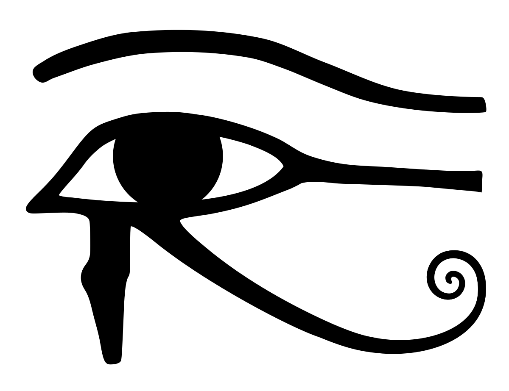

By the time that Osiris had been resurrected by the gods, Horus had matured into an adult. After Osiris was revived, Horus took on Seth in order to both avenge his father, and also gain the title as king of the gods. There are many different ways in which Horus and Seth were said to have competed. The main competition was akin to a trial, with a tribunal of gods acting as the jury. Whoever the gods chose would be king of the gods. In addition to the "trial," there were many different ways in which they competed. During one of these conflicts, Seth ripped out Horus' eyes. In order to heal him, Thoth used the sun and the moon, creating the now iconic eye of Horus. Eventually, Horus defeated Seth, and became the king of the gods.
